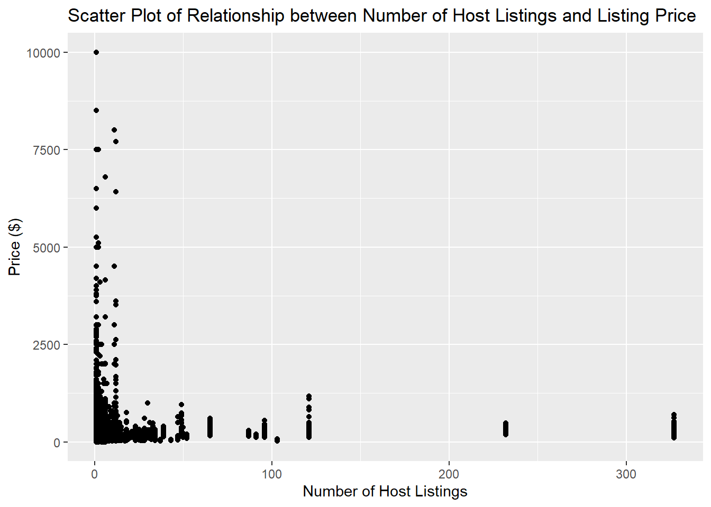

library(tidyverse)
library(ggplot2)
knitr::opts_chunk$set(echo = TRUE, warning=FALSE, message=FALSE)Challenge 5
challenge_5
emma_narkewicz
air_bnb
Introduction to Visualization
Read in one (or more) of the following datasets, using the correct R package and command.
- emma_narkewicz
- challenge_5
- AB_NYC_2019 ⭐⭐⭐
The AB_NYC_2019 data set had original dimensions of 48,895 x 16. I read in the data set and removed the host name column as there is a host id column that can used to look for any duplicates.
Air_BNB_Data <- read_csv("_data/AB_NYC_2019.csv") %>%
select(!contains("host_name"))
Air_BNB_Data# A tibble: 48,895 × 15
id name host_id neigh…¹ neigh…² latit…³ longi…⁴ room_…⁵ price minim…⁶
<dbl> <chr> <dbl> <chr> <chr> <dbl> <dbl> <chr> <dbl> <dbl>
1 2539 Clean & … 2787 Brookl… Kensin… 40.6 -74.0 Privat… 149 1
2 2595 Skylit M… 2845 Manhat… Midtown 40.8 -74.0 Entire… 225 1
3 3647 THE VILL… 4632 Manhat… Harlem 40.8 -73.9 Privat… 150 3
4 3831 Cozy Ent… 4869 Brookl… Clinto… 40.7 -74.0 Entire… 89 1
5 5022 Entire A… 7192 Manhat… East H… 40.8 -73.9 Entire… 80 10
6 5099 Large Co… 7322 Manhat… Murray… 40.7 -74.0 Entire… 200 3
7 5121 BlissArt… 7356 Brookl… Bedfor… 40.7 -74.0 Privat… 60 45
8 5178 Large Fu… 8967 Manhat… Hell's… 40.8 -74.0 Privat… 79 2
9 5203 Cozy Cle… 7490 Manhat… Upper … 40.8 -74.0 Privat… 79 2
10 5238 Cute & C… 7549 Manhat… Chinat… 40.7 -74.0 Entire… 150 1
# … with 48,885 more rows, 5 more variables: number_of_reviews <dbl>,
# last_review <date>, reviews_per_month <dbl>,
# calculated_host_listings_count <dbl>, availability_365 <dbl>, and
# abbreviated variable names ¹neighbourhood_group, ²neighbourhood, ³latitude,
# ⁴longitude, ⁵room_type, ⁶minimum_nightsBriefly describe the data
This data set contains information about Air BNB properties in New York City available to rent. After read in there are 48, 895 rows and 15 columns. The columns are: - id (numeric) is a unique id for each listing - name (character) is a short description of the rental property - host_id (numeric) is a unique id for each Air BNB host - neighbourhood_group (character) describes if a listing is in Bronx, Brooklyn, Manhattan, Staten Island, or Queens - neighbourhood (character) describes the more specific neighborhood of the listing - latitude (numeric) of the rental property - longitude (numeric) of the rental property - room_type (character) describes if the Air BNB is a private room, entire home/apt, or private room - price (numeric) of the listing in dollars per night - minimum-nights (numeric) required to book listing - last_review (date) is the date of the last Air BNB review - reviews_per_month (numeric) is number of reviews per month - calculated_host_listings_count (numeric) is the number of Air BNB listings the host has - availability_365 (numeric) is the number of days out of a year that the Air BNB is available to book
I could not find any duplicated IDs or columns that needed to be mutated.Looking at the summary of the data frame there are missing values in the last_review and reviews_per_months, 20.6% of the data set for both. It appears that the listings missing reviews_per_months have no reviews, as they do not have a date of last review.
#library(summarytools)
#dfSummary(Air_BNB_Data)I created a histogram for my first univariate visualization, as it is a convenient way to display the distributions of a continuous variable such as price. I used facet wrap to create subplots based on neighborhood_group, and used fill to further visualize by room_type.
library(tidyverse)
#histogram of price with subplots neighborhood group
ggplot(Air_BNB_Data, aes(price, fill = `room_type`)) + geom_histogram(binwidth = 25) + facet_wrap(vars(`neighbourhood_group`), scales = "free") + labs(title = "Air BNB Price by Neighborhood", x_axis = "Price", y_axis = "Count") + xlim(0, 1000) 
The above plot shows the price of an Air BNB listing per night depends on both the neighborhood and the room_type. The fill showcases that renting an entire home/apt are the most expensive of all room types. Shared rooms are the least expensive, and least common of all room types.The plot also shows that the most expensive neighborhood group to rent an Air BNB in is Manhattan. Based on the scale of the y-axis of all the subplots, the highest number of Air BNB listings seem to be in Brooklyn, followed by Manhattan, then Queens. The Bronx seems to have the second fewest Air BNB listings of the 5 neighborhood groups and Staten Island has the least listings.
To be sure about the number of listings, I created a bar chart of the number of listings by each neighborhood and used facet_wrap() to break down the plot by room_type. I chose a bar graph as it displays the total count, not distribution of a variable, which is what I want. Filling by neighborhood group allows for easier comparisons of neighborhoods across the room type subplots.
#barchart of number of listings by room type and neighborhood
ggplot(Air_BNB_Data, aes(`neighbourhood_group`, fill = `neighbourhood_group`)) + geom_bar() + facet_wrap(vars(`room_type`)) + labs(title = "Air BNB Listings by Room Type and Neighborhood", x = "Neighborhood", y = "Number of Listings")
With the same y-axis scale for all 3 subplots and the total number of listings, it is clear that most Air BNB listings are entire homes or apartments, with shared rooms being the least common listing in all neighborhoods.The majority of Air BNB listings in the data set are located Manhattan and Brooklyn. In Queens and the Bronx, there are more private rooms available to rent than entire homes/apartments.
For my first bivariate visualization, I wanted to see if there was a relationships between the number of Air BNB listings a host had and the price of the listings. I chose to use a scatter plot as it displays the relationship between 2 variables. I selected Price as the dependent variable, as I hypothesized that the price would be dependent on the number of Air BNB listings a host had.
#Relationship Price vs. number of listings
ggplot(Air_BNB_Data, aes(calculated_host_listings_count, price)) + geom_point() + labs(title = "Scatter Plot of Relationship between Number of Host Listings and Listing Price", x = "Number of Host Listings", y = "Price ($)") 
The above plot illustrates that the mode number of host listings is 1, with most hosts having fewer than 25 listings, It appears 4 hosts having more than 100 listings, 2 hosts having more than 200 listings, and 1 host having over 300 listings!
Hosts with Air BNBs that have 50 or 100s of listings do not appear to have super expensive properties, with them all under $1,500. The highest priced Air BNB listings between $5,000 - $10,000 appear to be for hosts that have only 1 or a few listing.
This chart suggests that most Air BNB owners only have a few properties, and that having many properties does not mean charging exorbitant listing prices.
#median number of host listings
summarize(Air_BNB_Data, median(`calculated_host_listings_count`))# A tibble: 1 × 1
`median(calculated_host_listings_count)`
<dbl>
1 1#mean number of host listing
summarize(Air_BNB_Data, mean(`calculated_host_listings_count`))# A tibble: 1 × 1
`mean(calculated_host_listings_count)`
<dbl>
1 7.14#median price
summarize(Air_BNB_Data, median(`price`))# A tibble: 1 × 1
`median(price)`
<dbl>
1 106#mean price
summarize(Air_BNB_Data, mean(`price`))# A tibble: 1 × 1
`mean(price)`
<dbl>
1 153.The median number of host listings is only 1, and the mean is just over 7, supporting that most Air BNB owners don’t own many properties. I also calculated the median and median AirBNB price, and saw that they were much lower than I would have guessed from the graph. The median price was $106, while the mean price was $152. This plot does not accurately show the distribution of the listing prices.
To better understand the distribution of the price data, I created a violin plot displaying listing type by neighborhood group. I selected a violin plot as it can clearly show the distribution of price, which the scatter plot could not.
#Violin Plot of price by neighborhood group
ggplot(Air_BNB_Data, aes(x= neighbourhood_group, y = price, fill= neighbourhood_group)) + geom_violin() + labs(title = "Violin Plot of NYC Air BNB Listing Price by Neighborhood", x = "Neighborhood", y = "Price ($)")
The violin plot shows that most prices are concentrated near 0. The maximum price of a listing in the Bronx was $2,500, the maximum price of listings in Brooklyn, Manhattan, and Queens are $10,000 and the maximum price of a listing in Staten Island is $5,000. With the current y-axis, it is hard to make out the distribution of price clearly. To better visualize it, I created another plot setting the y-axis from prices of $0 - $250.
#Violin Plot of Listing price by neighborhood with ylim of 0 - 250.
ggplot(Air_BNB_Data, aes(x= neighbourhood_group, y = price, fill= neighbourhood_group)) + geom_violin() + labs(title = "Violin Plot of NYC Air BNB Listing Price by Neighborhood $0-$250", x = "Neighborhood", y = "Price ($)")+ ylim(0, 250)
This plot shows that compared to the other neighborhoods, the price of listings in Bronx and Queens are especially concentrated among $50 or below. The distribution of prices for listings in Manhattan is the most spread out of the 5 neighborhoods, between $50 & $200. There is a bulge in the violin plots for Brooklyn, Manahattan, and Queens at $50, $100, $125, $150, $200, and $300, suggesting that the price of these listing prices are most commonly rounded to the nearest $50 (or $25 in the case of $125).
I wanted to create a bubble map based on prices, but continued to get errors that the subscript was out of bounds when trying to load a map of New York & New Jersey in the background as modeled on R Graph Gallery. This is something I hope to be able to accomplish later, perhaps with some guidance from the course tutors.
Update - We did it! Thank you Professor & Class :-)
library(tidyverse)
library(maps)
library(viridis)
library(mapproj)Error in library(mapproj): there is no package called 'mapproj'Air_BNB_Data# A tibble: 48,895 × 15
id name host_id neigh…¹ neigh…² latit…³ longi…⁴ room_…⁵ price minim…⁶
<dbl> <chr> <dbl> <chr> <chr> <dbl> <dbl> <chr> <dbl> <dbl>
1 2539 Clean & … 2787 Brookl… Kensin… 40.6 -74.0 Privat… 149 1
2 2595 Skylit M… 2845 Manhat… Midtown 40.8 -74.0 Entire… 225 1
3 3647 THE VILL… 4632 Manhat… Harlem 40.8 -73.9 Privat… 150 3
4 3831 Cozy Ent… 4869 Brookl… Clinto… 40.7 -74.0 Entire… 89 1
5 5022 Entire A… 7192 Manhat… East H… 40.8 -73.9 Entire… 80 10
6 5099 Large Co… 7322 Manhat… Murray… 40.7 -74.0 Entire… 200 3
7 5121 BlissArt… 7356 Brookl… Bedfor… 40.7 -74.0 Privat… 60 45
8 5178 Large Fu… 8967 Manhat… Hell's… 40.8 -74.0 Privat… 79 2
9 5203 Cozy Cle… 7490 Manhat… Upper … 40.8 -74.0 Privat… 79 2
10 5238 Cute & C… 7549 Manhat… Chinat… 40.7 -74.0 Entire… 150 1
# … with 48,885 more rows, 5 more variables: number_of_reviews <dbl>,
# last_review <date>, reviews_per_month <dbl>,
# calculated_host_listings_count <dbl>, availability_365 <dbl>, and
# abbreviated variable names ¹neighbourhood_group, ²neighbourhood, ³latitude,
# ⁴longitude, ⁵room_type, ⁶minimum_nights#Load map using filter, plot data on it
states_map <- map_data("state")
filter(states_map, region == "new york")%>%
ggplot() + geom_polygon(data = , aes(x=long, y = lat, group = group), colour = "black", fill = NA) + geom_point(data= Air_BNB_Data, aes(x=longitude, y=latitude, size= price, color= price)) + coord_map() Error in `mproject()`:
! The package `mapproj` is required for `coord_map()`